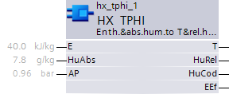

HX_TPHI：焓和绝对湿度到温度和相对湿度
HX_TPHI (FB422) 块计算焓和绝对湿度以形成温度和相对湿度（根据 h,x 图）。 HX_TPHI_SiUn (FB422)、HX_TPHI_UsUn (FB795)、HX_TPHI_CaUn (FB790)
该块中集成了以下功能：
- Calculation of the condensed amount of water and the effective enthalpy (without condensate) if the air state is within the fog area.
- Air pressure connection (optional).

输入
Pin | E | Description |
E | pa | 焓 |
HuAbs | pa | 绝对湿度 |
AP | pa | 气压 气压测量值或恒定值。参见工程。 |
输出
Pin | E | Description |
T | a | 温度。 温度是根据输入变量计算的。 |
HuRel | a | 相对湿度。 |
HuCod | a | 饱和空气中的冷凝水部分。 如果空气状态处于 h,x 图的雾区域内（饱和曲线下方），则确定了冷凝水量。 |
EEf | a | 有效焓（无冷凝物）。 从测得的焓[E]中扣除水量的能量。 |
输入值
Pin | Description | Data Type | Default value | E.g. Engineering unit or Text group | Min. | Max. |
E | 焓 | 真实的 | 40.0 | kJ/kg | 0.0 | 100.0 |
17.2 | Btu/lb | 0.0 | 43.0 | |||
HuAbs | 绝对湿度 | 真实的 | 7.8 | g/kg | 0.0 | 50.0 |
0.008 | lb/lbda | 0.0 | 0.05 | |||
AP | 气压 | 真实的 | 0.96 | 酒吧 | 0.0 | 4.0 |
28.35 | 汞柱 | 0.0 | 118.1 |
输出值
Pin | Description | Data Type | Default value | E.g. Engineering unit or Text group | Min. | Max. |
T | 温度 | 真实的 | 20.0 | °C | -50.0 | 150.0 |
68.0 | °F | -58.0 | 302.0 | |||
HuRel | 相对湿度 | 真实的 | 50.0 | %RH | 0.0 | 100.0 |
HuCod | 卫星空气中的水 | 真实的 | 2.0 | g/kg | 0.0 | 20.0 |
0.002 | lb/lbda | 0.0 | 0.02 | |||
EEf | 效率（无冷凝） | 真实的 | 40.0 | kJ/kg | -20.0 | 100.0 |
17.2 | Btu/lb | -8.6 | 43.0 |
工程
Parameterizing the air pressure [AP]
如果气压无法作为测量变量，则可以将其定义为常数。气压随着海拔高度的增加而降低；因此，需要根据海拔高度来定义常数：
Altitude (m) | AP (bar) |
| Altitude (ft) | AP (inHg) |
0 | 1.013 | 0 | 29.91 | |
300 | 0.978 | 1000 | 29.34 | |
600 | 0.943 | 2000 | 28.29 | |
900 | 0.910 | 3000 | 27.30 | |
1200 | 0.877 | 4000 | 26.31 | |
1500 | 0.846 | 5000 | 25.38 | |
1800 | 0.815 | 6000 | 24.45 | |
2100 | 0.785 | 7000 | 23.52 |
过程响应
标准（参见General rules and information).
故障排除